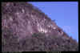

| The Crown (Urbenville) Climbing Guide |
By Alistair Byrom & Ken Cox
Updated 1997 by Neil Monteith
Last updated
Jan 2009
|
|

|
For those of you who are yet to visit the thriving metropolis of Urbenville, you will find it about 14km from Woodenbong and Woodenbong is the first cockroach-haven south of the border on the Mt
Lindesay Highway (which turns into the Summerland Way).
Directions
To get to the Toolum Falls campground, head through Urbenville on the main street
(Urben Street). Continue on this road out of town for two to three
kilometres. Turn L at sign for Toolum Falls (dirt road). Continue to end of road. There are pit toilets, but no tap water. Click here for a view of the waterfall at the campground.
Access Update (2009)
It is requested (by the farmer whose land you cross to access the cliff) that you phone him prior to your arrival and seek permission to access The Crown. His name is Mr Jones and his number is (02) 6634 1225. Think of this as a courtesy call which will serve to keep climbers in the good graces of land managers. Please do it. If you should have any problems with this arrangement, post up on qurank.com.
|
When on the main street of Urbenville (Urben Street), take Stephen Street out of town and over small bridge. Turn L into Sewerage Treatment Works. Once the car has been safely parked, head up the grass slope to the two 'apple trees'. Once at the tree line follow the ridge up - if you're lucky you may even find a track. Once you're quite high on the ridge, contour to the R until you arrive at the base of the cliff. The walk takes 20-25 minutes. |
 |
|
Above: The Crown |
If you managed to follow the correct track you will have hit the cliff just
before the first climb listed. The climbs are mainly on slabs, with the majority of protection being bolts (usually too many). Most require hangers and
most are non-stainless steel so are rusty - take care. Almost all routes are soft touches at the grade.
Rebolting Update (2008)
Thanks to a coalition of the willing representing QUT Cliffhangers and Safer Cliffs Queensland, there has been significant rebolting of the popular slab routes.
| Guide to symbols |
 |
Sport route |
| BR |
Bolt runner |
| CB |
Chain belay |
| DBB |
Double bolt belay |
| FH |
Fixed hanger |
| SLCD |
Spring-loaded camming device (friend) |
The climbs are listed from L to R when facing the cliff.
The James Scott Memorial Diet 40m 21
Apparently pretty damn hard. Climb ar�te L of large tree, which is in turn L of a large fallen tree and stump hole. Follow the system of corners up and step L on to slab, passing
BR's to CB.
(BR's, SLCD's, wires)
Mark Plenderlieth & Alistair Byrom 90s
Sceptre 95m 19
Very good indeed. From large stump hole move up slab
about 5m to dish and a single BR belay (use a sling to clip into bolt as
leader will need all the rope to get to first CB).
1) 50m (19) From dish head towards orange overhang and a step to the R on to slab heading for short, prominent corner past two BR's to CB.
2) 45m (18) Head up corner following BR's to top CB.
(BR's, mixed gear)
Alistair Byrom, Ken Cox 90s |
|
|
Above: Neil Monteith and Marty Blumen up at the
belay on The James Scott Memorial Diet |
Foreign Accent Syndrome 25m 17
Several metres L of a broken corner with a large stump and a fallen tree, about 20m R of stump hole. Head up L side of hanging block to flake up L side of block to bolt belay.
(BR's & SLCD's)
Mark Plenderlieth, Ian Harrison 90s
Texas Chainsaw Massacre 25m 19
It was funny at the time. Directly up from broken stump, up R side of overhang to tree root and then up past three BR's to CB. A fall on the crux could serve you up on the slab - take
care.
(BR's and wires)
Ian Harrison, Mark Plenderlieth 90s
|
Slip 23m 19
A popular thin slab. About 4m R of broken corner, blast up slab and clip six BR's
to CB.
Ken Cox 90s
Fantastic 75m 19
Starts at CB of Slip to create a four pitch voyage.
1) 35m (16) Traverse R two metres then up and R past FH to ledge. Veer L a
little up slab to spacious ledge with CB.
2) 25m (crux) Up shallow corner to
obvious steep corner (many FH's). Overcome this and the tricky ar�te crux move
onto slab to reach CB at small tree.
2) 15m (17) Clip FH from ledge and climb the slab above past numerous FH's to tree belay.
Established by Pete Schmidt 1996
FFA Darrin Carter, Sean Smith 1996
|
|
|
Above: Erik Smits leading Slip |
Slope 23m 18
Another romp up slab past the L side of a small nose to CB at the top of Slip.
Ken Cox 90s
Sonoluminescence 20m 17
Up R side of small nose past a SLCD placement and numerous BR's to CB at top of
Slapp. Has an interesting bulge at half height.
(BR's & SLCD)
Mark Plenderlieth 90s |
|
|
Above: Darrin Carter and an unknown
enjoying this wall |
If you're not bored with this little slab yet, here's another blast off.
Slapp 20m 15
Off block and follow seam to first BR at five metres. Up slab blipping colts to CB.
Ken Cox 90s
Gearbox Gastro 25m 18
Quite testing. 3m R of Slapp. Up slab passing two BR's to large SLCD placement and BR. Up steep section passing a FH (crux) to overlap, and on to CB.
(BR's, FH's & SLCD's)
Andrew Horchner 90s |

|
|
Above: Ana Greer leading Slapp |
Slither 25m 17
Solid at the grade, but excellent. Up slab clipping BR's to obvious triangular tooth. Once up steepness and at the overlap, head L to CB at top of Gearbox Gastro.
(BR's & SLCD's)
Alistair Byrom, Ken Cox, R. Byrom 90s
Weetbix Warrior 25m 18
More good value. About five metres R of Slither. Up slab to a tricky step R and FH. Sweet pockets will see you through the crux steepness. Continue up corner to CB.
Ken Cox, Alistair Byrom 90s
Urban Villain 16m 21
Not popular. This climb starts R about three metres. Head up corner to vegetated ledge. From here step R onto steeper territory. Follow
BR's to a fixed biner belay (don't use small bolts).
Alistair Byrom, Ken Cox 90s
Easement 30m 15
Good, but a sandbag at its original grade of 13 if climbed directly. Start about 12m R of Urban Villain, in a shallow V. Climb up the V and step L onto a large ledge, the first BR is clipped from the ledge. From the ledge head up to orange overhang and CB.
(BR's & SLCD's)
Alistair Byrom, Ken Cox 90s |
|
|
Above: Philippa Newton seconding
Easement |
Unknown 60m 22
1) 40m (22) Start up Easement but move R before chains following FH's up and then L to steep wall. Crank L and up weakness in this steep headwall wall past numerous
FH's to slab then to CB.
2) 20m (19) Up slab above past big flake and numerous FH's to tree belay.
Probably established by Pete Schmidt 1996
Unknown 1996?
Unknown 50m 17?
1) 30m (13) As for Easement.
2) 20m? (17?) Move R from the belay and instead of trending back L toward the steep wall as per the 22, follow the line of
FH's R into the corner, then out R and on R-wards.
Probably established by Pete Schmidt 1996
Unknown 1996?
Treddle 30m 17
Quite varied. This climb starts 3m L of the top of the small ridge about 20m R of Easement. Climb up slab heading L to a vegetated corner and FH. Up slab through branches of
squiggly gum to blunt ar�te. Up ar�te to ledge. Off ledge and up to CB past small wire placements.
(BR's, FH, SLCD's & wires)
Ken Cox, Mark Plenderlieth 90s
Wasted Days and Wasted Nights 65m 15
1) 35m (15) At top of ridge head up gentle slab to obvious corner. Up corner to where it eases and trends L. Ignore this (and the FH out L). Instead, step R into smaller corner and up to CB at good stance.
2) 30m (15) From chains head about four metres R and up water mark passing several
BR's to steeper rock (FH's). Surmount this then up corner (ignoring unnecessary
retrobolts) to CB just above she-oak.
Ken Cox, Alistair Byrom 90s
Wasted Days and Wasted Nights LHV 20m 16
2b) Directly up from the belay following the line of FH's up the smooth slab, trending slightly L to CB.
Peter Schmidt, James Fisher 18/3/96
Down this ridge (toward the road) about thirty metres is a small buttress with three routes on it.
Scream of the Hoggart 12m 21
A goey little thing. This climb goes up the L of the two cracks with a hard start and fiddly placements, ending at
Noddy's CB.
(natural gear)
Mark Plenderlieth, Ian Harrison 90s
Fuck Off Noddy 12m 22
Classic and quite sequency. The clean line located in the middle of the buttress, below the R slanting flake ending at a
very stylish, gold CB.
(2 BR's, FH)
Mark Plenderlieth & Ian Harrison 90s |
|
|
Above: Neil Monteith leading Fuck
Off Noddy |
Waste Snot Want Snot 12m 21
No easier than Noddy. Starts at R side of buttress below prominent flake. Boldly up to first FH then trend R to second FH. Up to top passing last FH,
unsuccessfully trying to avoid stepping L. CB.
Mark Plenderlieth, Ian Harrison 90s
Back to the main cliff line. The next cluster of climbs are found by heading down the cliff from the previously mentioned ridge to a compact wall with numerous bolts.
Unknown 20m 17
First route up dirty wall past a few BR's.
Unknown 1996
Nightmare 22m 25/26
Looks heinous!! Two FH's lead up and to the L to a rest before the crux at the third FH. Up past one BR to finish. CB.
Matt Hutton, Greg Hambling 3/95
The Liverpool Kiss 20m 23
Up to scoop and BR. Onwards past another three BR's to CB.
Mark Plenderlieth 1994
You Eeediot 20m 22
Weakness just L of Penial Warts. Four BR's and CB. Really just a
variant start to Penile Warts as it joins it at the second BR.
Mark Plenderlieth 1994
Penile Warts 22m 22
Start at warty tree. Up corner to small tree stump. Clip BR on L then up to second BR and traverse to the L. Up past another two
BR's and a small wire over the lip if you feel it is required, then up to CB.
(BR's and small wire)
Alistair Byrom, Ken Cox 90s
Tenuous Tendons 22m 21
Didn't manage to find this one. Supposedly about three metres R of Penile
Warts. Up past three BR's on difficult moves if you're the height of the first
ascensionists. At top corner above third BR, step L and up to CB.
Alistair Byrom, Ken Cox 90s
Romancing the Slabs 22m 23
Five metres R of the warty tree. Up to first BR at the patch of white lichen. Traverse R and up to second BR. Up to FH and crux. Clip fourth BR and you're there. CB.
Alistair Byrom, Ken Cox 90s
Follow the cliff line down another 50m past overhung wall to the base of a slab with a large black boy at its toe.
Imaginary Invalid 45m 20
Start at the left ar�te of the above mentioned slab. Head up to the large flake past two
BR's. The third BR is out on the L on top of the flake, a medium SLCD is required out to the R. Follow the line of least resistance past seven
BR's to CB.
Alistair Byrom, Ken Cox, M. Byrom 90s
Between these routes is a
grade 23 link-up.
Flatulence 35m 18
Up slab past SLCD slot and across to the R (long BR). Make your way back L
under roof past nose (big SLCD) and up to the big hole (BR). From here
zig-zag through break in wall past two
BR's. Once on slab, follow breaks to CB.
(BR's, #2.5 & ~#4 SLCD & medium wires)
M. & R. Byrom 90s
The next three on the slab
are quite bizarre. It's hard to tell them apart.
Image is All 35m 15
Start as for the previous two climbs. Head to the same bolt at the hole. Step down onto tooth and up R to ledge. From ledge follow
BR's to CB.
Alistair Byrom, M. Moran 90s
I'll Be Bach 35m 19
A direct start for Image is All. Start up slab about eight metres R of original start. Head up past two
BR's then trend L to undercling and up to ledge.
Ingo the Dingo 90s
Unknown 35m 20
Another direct start just R of I'll be Bach. This time up slab past three BR's
to hole and BR.
Unknown 90s
Unknown 45m 21
Reputedly good and hard.
Great pinches through the overhang. Up the slab heading for the big
white stripe on the steep wall up high passing 4 BR's to get there.
Climb the steep stain past another BR, then keep going following the
bolts.
Andrew Horchner 90s
The next two climbs start about 25m R (past the section with the steep
headwall) under a pine tree about 5m L of a break in the cliff.
Wasp 45m 18
Up almost horizontal flake to natural gear in corner. Up slab to BR. Traverse L to corner crack, an #11 hex can be fiddled into hole. Thence to the R and up crack to CB.
(BR & natural gear)
Ken Cox, R. & Alistair Byrom 90s
Flakes Away 45m 22
Start as for Wasp. Up to ledge at five metres, then up to BR. Continue up past small SLCD placement and another four
BR's. From fifth BR trend L to CB.
(BR's & natural gear)
Alistair Byrom, Ken Cox 90s
Streak 15m 16?
10m R. Apparently the streak
up the vague L-facing corner has been done without bolts. Meander up to
TB.
These next climbs are found on the inclined slab,
down, and about 30m R of the previous climbs.
Ugly Duckling 20m 13
Well I think it looks fun.
The black, L-trending wide crack up the slab ending at a TB.
The next two climbs were the first to be done on this cliff, obviously in the reverse order, in February 1991.
Jetsom 15m 14
Up the short ar�te clipping BR's to CB.
Alistair Byrom, Ken Cox 2/91
Flotsam 16m 15
Start about four metres R of Jetsom. Head straight up slab clipping BR's to CB.
Ken Cox, Alistair Byrom 2/91

|

{kind=link}
{kind=link}
{kind=link}
{kind=link}
{kind=link}
{kind=link}